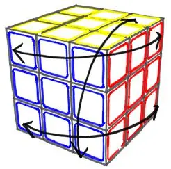

Commutators and Conjugates

Only by using commutators and conjugates it is possible to solve any puzzle similar to the Rubik's Cube.
Whatever the strategy or method used in the solution, there is always the need to use commutators and conjugates, especially in the end, when there are too much movement restrictions.
This page presents the fundamental concepts of these two special types of movements.
To better understand and thus build your own commutators and conjugates it is advisable that you first learn how to solve the Rubik's Cube according to the guide presented in Rubik's Cube.
Commutators
A commutator is simply the overlapping of two back-and-forth movements that intersect layers at a certain point.
A back-and-forth movement consists of a sequence of movements that is then undone following exactly the opposite order and direction. For example, R R' is a back-and-forth move. Another example would be R U U' R'. Note that the back-and-forth is always composed of an even number of moves.
We can say that the first half of moves is represented by a letter, for example A. Then the other half is simply represented by A-1, that is, the inverse of A. So in the last back-and-forth given example, R U would correspond to A and U' R' would be A-1.
By overlapping two movements of the type back-and-forth we have a commutator: A B A-1 B-1. In this case A A-1 and B B-1 are different back-and-forth moves. Note that these different moves must have layers that intersect at a certain point, they cannot be in parallel layers like for example U U' and D D' because nothing would change in the cube.
See below some examples of commutators for the Rubik's cube:
This overlapping of back-and-forth moves actually results from the intersection of two hidden back-and-forth moves. You can dive into the details on how this commutator emerges from these hidden back-and-forth moves in the chapter 9 of the guide for solving the Rubik's cube by logic. In the same chapter you can learn the basics on how to design your own commutadors. All examples you see in the current page were designed following the same logic.
Conjugates
A conjugate is nothing more than any movement "encompassed" by a back-and-forth movement. Consider that the back-and-forth is represented by A A-1 while Z represents any movement, which can be one or more commutators or even another conjugate. So the conjugate of A A-1 with Z will be A Z A-1.
Note that the conjugate is nothing else than a "setup move" done before a sequence of movements and then undone at the end of that sequence.
The conjugate is very useful when you want to apply a commutator but the cubelets are not in the correct starting positions.
See below an example of using a conjugate with a commutator that swaps 3 corners. Differently from the example 1 above, in this case it is possible to swap 3 corners however without changing their color orientation.
It is concluded, therefore, that the commutators, seen at the beginning, are overlappings of empty conjugates. The back-and-forth movement is nothing else than an empty conjugate, that is, there is nothing inside it. We can write that the back-and-forth movement, U U' is equivalent to U ( ) U', where ( ) represents an empty space. Therefore, by overlapping two conjugates we have a commutator, as seen at the beginning of this page.
For example, overlapping (L D' L') ( ) (L D L') with U ( ) U':
(L D' L') ( ) (L D L')
U ( ) U'
_________________________
(L D' L') (U) (L D L') U'
We end up with the same commutator seen in the Example 1.